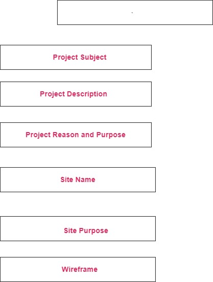

QuickBite - Fast Food Finder
QuickBite is a website designed to help users discover and explore fast food options in their area. The website will feature a directory of fast food restaurants, menus, reviews, and nutritional information. Users will be able to search for restaurants based on location, cuisine, and dietary preferences.
The purpose of QuickBite is to provide a convenient and informative platform for fast food enthusiasts to find and enjoy their favorite meals. By aggregating restaurant information and user reviews, QuickBite aims to help users make informed decisions about their fast food choices and discover new dining options.
QuickBite
The name “QuickBite” is short, memorable, and clearly communicates the site’s focus: quick access to fast food options. It is relevant, catchy, and suitable for branding.
Optional domain availability: quickbitefinder.com
The site provides a central hub for discovering fast food restaurants in a user’s area. It offers detailed information such as menus, user reviews, nutritional facts, and the ability to filter restaurants by dietary preferences and location.
#df275e – used for headings, buttons, and accents#deeaee – used as background and section highlightsMobile View:
Desktop View: